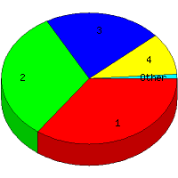

Week of 10/11/2009 to 10/17/2009: Top
5 of
5 File Types (Extensions)
Sorted by Access Count
Individual file types as determined by file extensions. All URLs that
do not contain an extension are counted as directories.

| Rank |
Type |
Accesses |
% |
Bytes |
% |
| 1 |
htm
|
34 |
35.05 |
106,942 |
12.52 |
| 2 |
Directory (folder)
|
31 |
31.96 |
78,750 |
9.22 |
| 3 |
gif
|
21 |
21.65 |
303,846 |
35.58 |
| 4 |
jpg
|
10 |
10.31 |
364,240 |
42.65 |
| 5 |
css
|
1 |
1.03 |
260 |
0.03 |